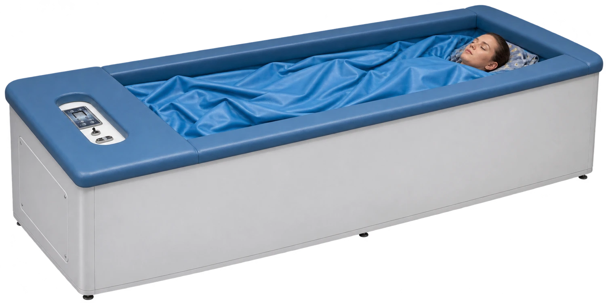

Иммерсионная ванна (сухой флоатинг)

Стоимость
- Сеанс 60 мин
- 3 000 ₽
- Сеанс 90 мин
- 4 500 ₽
Суть метода
В иммерсионной ванне вы ложитесь на платформу, и она плавно опускается в воду температурой 33–34 °C. Между вами и водой — мягкое эластичное покрытие. Оно облегает тело, как кокон, и сохраняет кожу сухой. Давление распределяется по телу, нагрузка на спину и другие участки, на которые вы обычно опираетесь лёжа, уменьшается. Мышцы расслабляются, и появляется ощущение лёгкости.
Для чего применяется
При сухой иммерсии привычная нагрузка на точки опоры уменьшается: давление распределяется по большей поверхности тела. Мышцы, которые обычно удерживают позу, могут расслабиться. Отсюда ощущение лёгкости, напоминающее невесомость.
В восстановительной медицине сухую иммерсию включают, например, в программы:
- Работы с повышенным мышечным тонусом — избыточным напряжением мышц при неврологических заболеваниях, в том числе в реабилитации после инсульта.
- Реабилитации при заболеваниях позвоночника с болевым синдромом — как одну из методик, направленных на разгрузку и мышечное расслабление.
- Реабилитации при болезни Паркинсона — в составе индивидуально подобранной программы.
Это примеры медицинского применения метода. Подходящую задачу и сочетание с другими процедурами определяет специалист.
Как проходит сеанс
Вы ложитесь на подъёмную платформу. При опускании платформы эластичное водонепроницаемое покрытие облегает тело. Вода внутри системы поддерживается при 33–34 °C. Лицо остаётся открытым, кожа с водой не соприкасается.
Мы выключаем свет. В темноте остаётся только проекция звёздного неба с созвездиями и переливами Млечного Пути. Сеанс сопровождает специально подобранная музыка для расслабления и восстановления.
История метода
Метод сухой иммерсии разработали в начале 1970-х годов в московском Институте медико-биологических проблем (ИМБП, ныне институт РАН). Он позволил изучать на Земле отдельные эффекты невесомости, в том числе опорную разгрузку. Сегодня сухую иммерсию применяют и в восстановительной медицине.
Звуковое погружение
Музыка дополняет физические ощущения от процедуры. Протяжённые тоны и музыкальный рисунок создают обволакивающее звуковое пространство для медитативного отдыха.
В нашей подборке представлены записи с обозначениями частот от 111 до 1111 Гц. В используемой звуковой практике выделяют:
- 174–963 Гц — «Частоты Вознесения». Используются в практиках сосредоточения на внутреннем состоянии и саморегуляции.
- 111–1111 Гц — «Частоты Света». Подборка включает записи с обозначением 432 Гц. Используются для медитации, отдыха и творчества.
Духовная основа этой практики связана с представлением о резонансе звука с чакрами — энергетическими центрами в духовных традициях, через которые описывают жизненную силу, внутреннее равновесие и гармонию.
Во время сеанса можно направить внимание на дыхание и звучание, отпустить привычку постоянно следить за временем. По наблюдениям сотрудников, гости нередко отмечают, что даже полтора часа проходят удивительно незаметно.
Продолжительность и подготовка
Сеанс длится от 40 до 90 минут по вашему выбору. В действующем прайсе указаны тарифы на 60 и 90 минут. Подходящую продолжительность и возможность проведения уточняет медицинский специалист.
Перед первым посещением сотрудник объяснит особенности размещения, подготовки и способ связи во время сеанса. Для комфорта лучше выбрать лёгкую одежду. В клинике также предоставляют одноразовый комплект белья для мужчин и женщин. О заболеваниях, недавних операциях и текущем недомогании необходимо сообщить заранее.
Ограничения и самочувствие
Сухая иммерсия имеет противопоказания. В методических материалах среди существенных ограничений указаны острый инфаркт, отдельные серьёзные нарушения сердечного ритма, тромбозы и тромбофлебиты, обострения заболеваний лёгких, а также состояния с выраженным уменьшением объёма циркулирующей крови.
Возможность проведения оценивает медицинский специалист. Администратор помогает с записью, но не определяет допуск по перечню заболеваний.
Во время сеанса о головокружении, тошноте, тревоге или другом дискомфорте нужно сразу сообщить сотруднику.
Ощущение тесноты. Эластичное покрытие иногда вызывает тревогу, напоминающую клаустрофобию — страх замкнутого пространства. Если такое ощущение вам знакомо, предупредите сотрудника до начала сеанса: с ним можно заранее обсудить степень укрывания и допустимый вариант размещения. Терпеть дискомфорт не нужно.
Частые вопросы
В какой одежде приходить?
Для сеанса подойдёт лёгкая одежда. В клинике также предоставляют одноразовый комплект белья для мужчин и женщин. В плотной одежде и гостиничном халате может быть жарко: внутри водонепроницаемого покрытия некоторые гости потеют.
Будет ли контакт с водой во время сеанса?
Нет. Эластичное водонепроницаемое покрытие отделяет тело от воды в системе.
Это настоящая невесомость?
Это ощущение возникает, когда меняется распределение давления на тело. Сила тяжести сохраняется.
Что я почувствую?
Ощущение лёгкости и «парения» по мере того, как уменьшается давление на привычные точки опоры. Кто-то спокойно слушает музыку, кто-то погружается в дремоту.
А если мне некомфортно лежать в «коконе»?
Расскажите об этом сотруднику до начала процедуры. Он обсудит с вами подходящее размещение; если тревога возникнет во время сеанса, сразу сообщите о ней.
Можно прийти на один сеанс?
Да, одно посещение позволяет познакомиться с процедурой и собственными ощущениями. Если она входит в лечебную программу, последовательность посещений определяет специалист.
Заменяет ли процедура сон?
Она дополняет отдых и помогает выделить время для расслабления. Полноценный ночной сон остаётся необходимым.